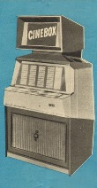
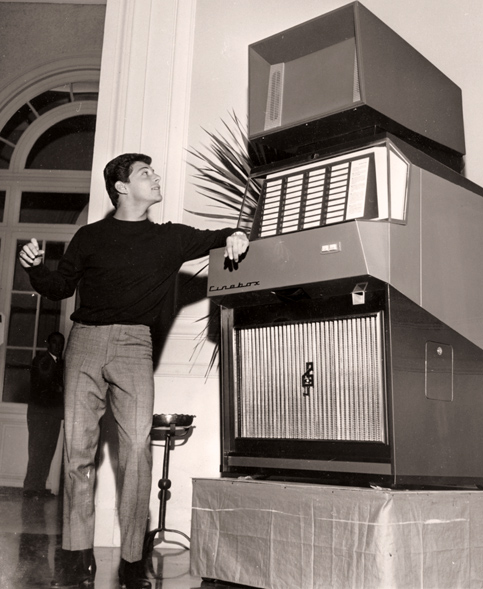
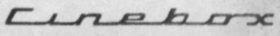
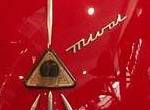
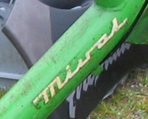

Il cinebox era un macchinario che consentiva di vedere su uno schermo i filmati delle canzoni suonate

La MI-VAL si occupò della produzione di alcune centinai di questi apparecchi
Anche se esula dagli scopi di questo sito, in quanto non riguarda la produzione motociclistica o motoristica della MI-VAL, ho deciso di dedicare un piccolo spazio al "cinebox", sia per la particolarità dell'oggetto sia come riconoscimento al genio italiano. Inoltre voglio ricordare mia nonna materna, Merice Contrini, che lavorò per un certo periodo all'assemblaggio di questi apparecchi.
I dati seguenti sono stati tratti dal sito del giornalista Michele Bovi, www.michelebovi.it, che ha dedicato a questo apparecchio 2 pubblicazioni e uno speciale di TG2 Dossier, al quale rimando per chi volesse maggiori informazioni.
Il cinebox, come il jukebox, permetteva la selezione di un brano musicale a scelta tra 40 disponibili. Oltre all'audio era però disponibile un filmato che riprendeva gli esecutori del brano stesso.
L'apparecchio fu inventato da Pietro Granelli e i primi esemplari furono costruiti dalla OMI (Ottico Meccanica Italiana) di Roma. Il primo apparecchiò fu presentato nel 1959. La commercializzazione fu seguita dalla SIF (Società Internazionale di Fonovisione) di Milano. La MI-VAL subentrò alla OMI nella produzione del cinebox.
|
 Frankie Avalon
testimonial del Cinebox al Festival di Sanremo 1964 |
E' curioso osservare come il logo utilizzato per la scritta "cinebox" sul pannello frontale dell'apparecchio sia molto simile a quello usato per la marca della MI-VAL sul muso del Mivalino o su alcuni ciclomotori di fine anni sessanta.


 |